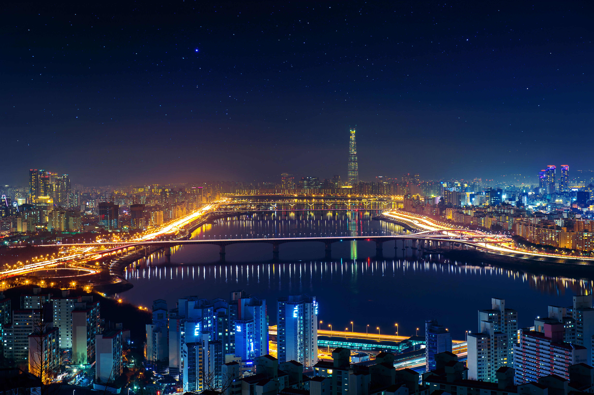
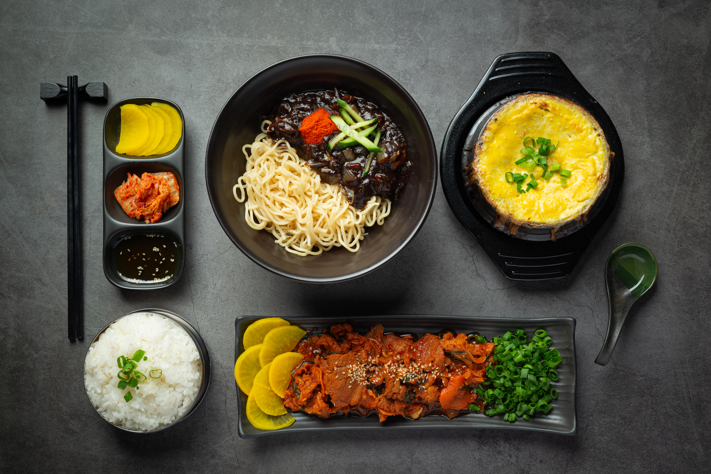

Conoce Corea del sur
¡Bienvenidos a este espacio dedicado a descubrir Corea del Sur! Creé este blog porque, desde hace mucho tiempo, me fascina su cultura, su historia, su gastronomía y su forma de vivir tanto lo tradicional como lo moderno. Mi sueño es viajar algún día a este increíble país, y mientras lo hago realidad, quiero compartir con ustedes todo lo que he aprendido y sigo descubriendo sobre él.
Aquí vas a encontrar una mirada general de las experiencias que se pueden disfrutar en Corea del Sur: desde sus ciudades llenas de luz y tecnología, hasta sus templos llenos de paz; desde la explosión de sabores de su comida callejera, hasta la serenidad de sus paisajes naturales. La idea es que puedas conocer un poco de todo antes de explorar más a fondo cada tema.
A continuación, te invito a recorrer las diferentes categorías del blog, donde podrás profundizar en los lugares turísticos, la cultura, la gastronomía, la vida nocturna, curiosidades y mucho más. Corea del Sur es un país que tiene algo para cada persona, y aquí vas a encontrar el punto de partida perfecto para enamorarte de él
Seúl, la ciudad que nunca duerme

Seúl por las noches es una ciudad que nunca se apaga. Cuando el sol cae, las luces de neón se encienden y transforman la capital de Corea del Sur en un escenario vibrante lleno de energía, cultura y contrastes. Las avenidas se iluminan con carteles de colores, los restaurantes siguen recibiendo gente hasta la madrugada, los mercados nocturnos se llenan de aromas irresistibles y los rascacielos reflejan el movimiento de una ciudad que vive a otro ritmo cuando oscurece.
Una de las razones por las que Seúl es tan atractiva de noche es su mezcla única entre modernidad y tradición. Puedes caminar por las calles futuristas de Gangnam con edificios inteligentes y música sonando desde las tiendas, y a pocos kilómetros encontrarte con el silencio histórico de los palacios reales, que por la noche se tiñen de una iluminación suave que los hace aún más mágicos. Lugares como el Palacio Gyeongbokgung o el arroyo Cheonggyecheon se vuelven escenarios perfectos para paseos tranquilos, lejos del ruido del día.
La vida nocturna también es parte esencial de su encanto. Barrios como Hongdae y Itaewon están llenos de bares, discotecas, cafeterías temáticas y espectáculos callejeros, lo que convierte a la ciudad en un punto de encuentro para jóvenes, artistas y turistas de todo el mundo. Además, la cultura del “late-night food” es casi obligatoria: puestos de comida en la calle, mercados nocturnos como Dongdaemun, y restaurantes abiertos 24/7 hacen que probar platos coreanos a medianoche sea toda una experiencia.
Seúl de noche es también una ciudad segura, limpia y bien conectada, lo que permite a los turistas moverse con tranquilidad a cualquier hora. Desde miradores como la N Seoul Tower hasta cruceros nocturnos por el Río Han, hay actividades para todos los gustos: románticas, culturales, gastronómicas o simplemente para disfrutar el ambiente urbano. En resumen, las noches en Seúl son parte de lo que hace que la ciudad enamore: es moderna pero conserva su esencia, es activa pero acogedora, y ofrece un sinfín de experiencias que no terminan al caer el sol. Por eso, visitar Seúl no es solo disfrutar del día, sino descubrir cómo la ciudad cobra una nueva vida cuando llega la noche.
Sabores que enamoran: la gastronomía coreana que conquista el mundo

La comida coreana es una explosión de sabores, colores y aromas que refleja la pasión y cultura del país. Cada plato cuenta una historia, desde el famoso kimchi, elaborado con verduras fermentadas y especias, hasta el bibimbap, un tazón lleno de arroz, vegetales, carne y huevo que se mezcla justo antes de comer. Los amantes de lo picante disfrutan del tteokbokki, pastelitos de arroz con salsa de chile, y del ramyeon, los irresistibles fideos coreanos. Además, no se puede dejar de probar el samgyeopsal, deliciosas tiras de panceta de cerdo asadas en la mesa y acompañadas con salsas y vegetales. En Corea, la comida no es solo para alimentarse, sino una experiencia compartida que une a las personas y despierta los sentidos. ¡Una vez que la pruebas, querrás volver por más!
Entre tradiciones y modernidad: la fascinante cultura de Corea del Sur

La cultura coreana es un equilibrio perfecto entre la historia milenaria y la innovación del presente. En sus templos budistas, palacios antiguos y aldeas tradicionales, se respira el respeto por las costumbres y la armonía con la naturaleza. Al mismo tiempo, su lado moderno brilla con la música K-pop, los dramas coreanos y la moda urbana, que han conquistado al mundo entero. Las festividades como el Chuseok (Día de la Cosecha) o el Seollal (Año Nuevo Lunar) muestran la importancia de la familia y las raíces ancestrales. En cada gesto, comida y celebración, Corea del Sur combina pasado y futuro, ofreciendo una experiencia cultural única, llena de energía, respeto y creatividad.